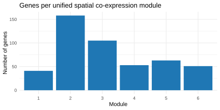
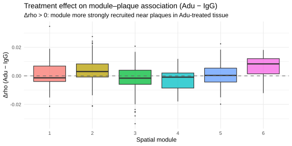
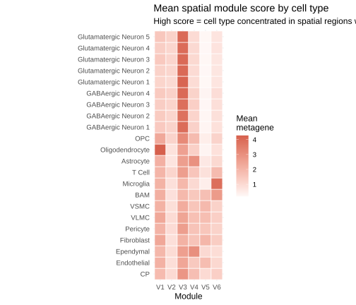

Module detection, plaque-type association, treatment effects, and module characterization
Published
March 24, 2026
Background
Genes that are individually spatially autocorrelated often co-vary across space in coherent groups, reflecting shared regulatory context: cell-type co-localisation, shared niche signals, or co-expressed gene programs. Detecting such groups requires computing gene–gene spatial correlations that account for the physical layout of cells in tissue, rather than simple Pearson or Spearman correlations across cells.
We implemented this analysis using the Giotto Suite package [@dries2021giotto], which provides a dedicated spatial co-expression workflow built on three functions:
detectSpatialCorFeats() computes spatially smoothed gene–gene correlations by averaging expression over each cell’s neighbourhood on the Delaunay triangulation network, then computing pairwise correlations on those smoothed profiles — a process that weights co-expression by spatial proximity.
clusterSpatialCorFeats() groups genes into co-expression modules by hierarchical clustering on the resulting gene–gene correlation matrix.
createMetafeats() is then intended to summarise each module as a single per-cell metagene score (the mean normalised expression of the module’s member genes), which can be related back to spatial coordinates, cell-type annotations, and plaque distances.
This notebook addresses three questions:
Plaque-type association — Are spatial programs associated specifically with CAA (vascular amyloid), parenchymal plaques, or both?
Treatment effect — Do Aducanumab-treated brains show different module–plaque associations compared with IgG controls?
Module characterisation — What genes define each module, and which cell types drive it?
Giotto issues
Giotto’s spatial co-expression workflow is partially broken across its v1 → v2 → GiottoClass/v3 migration. The code in this notebook deviates from the documented API in several places. This section records every workaround so that future debugging is not done from scratch.
Function
Documented behaviour
Actual behaviour
Resolution
detectSpatialCorFeats
Returns updated giotto object with spatCorObject stored inside
Returns a bare spatCorObject; assigning back to the giotto variable destroys it
Store return in a separate variable (spat_cor1); keep giotto object untouched
clusterSpatialCorFeats
Called on the giotto object
Must be called on the spatCorObject directly
Pass spat_cor1, not giotto1
createMetafeats — spat_cor_matrix arg
spat_cor_matrix = spat_cor1 passes the spatCorObject
Parameter does not exist → unused argument error
Removed; cluster vector passed directly
createMetafeats — feat_clusters arg
feat_clusters = "spat_cor_feats" (string name)
String lookup fails; requires the actual named integer vector
Retrieves spatCorObject from within the giotto object
Fails — spatCorObject is never stored inside the giotto object
Abandoned; spat_cor1 saved to disk separately and loaded directly
getExpression
getExpression(giotto1, ...)
future::getExpression masks Giotto::getExpression when future is loaded, dispatching to the wrong method
Use explicit namespace: Giotto::getExpression()
Zero-variance gene filter
Not required by docs
stats::cor() returns NA for zero-variance genes → hclust crashes with NA/NaN/Inf in foreign function call
Filter genes with apply(expr, 1, var) > 0 before calling detectSpatialCorFeats
createMetafeats — persistence
Metagene scores stored in expression or metadata slots of the giotto object
After saving and reloading the giotto object, neither showGiottoExpression() nor getCellMetadata() shows the scores — feat_type = "spatial_modules" does not exist
Recompute manually: Matrix::colMeans over normalised expression matrix for each module’s gene set
Fails: Normalized expression not found. First run normalization step — even values = "raw" fails because the feat_type was never written
Abandoned; metagene scores recomputed directly from expression matrix
cor_DT$variable type
Character gene names
Stored as factor or integer; direct string joins fail silently
Coerce before joining: mutate(variable = as.character(variable))
as_tibble() on transposed metagene matrix
Numeric column names preserved
R prefixes purely-numeric column names with "V" (e.g. module 1 becomes "V1"), breaking integer joins downstream
Strip prefix when needed: as.integer(sub("^V", "", module))
5 of 7 core functions or operations required undocumented workarounds. The spatCorObject internal structure ($cor_clusters$<name>) was reverse-engineered from str() output. The root cause is an incomplete API migration across Giotto versions with no deprecation warnings or updated vignettes.
## Module detection ##################################################################Run this chunk once to compute spatial correlations, cluster genes into modules, add metagene scores to the Giotto objects, and save all outputs to disk. All subsequent sections load from those saved files. See the Giotto API notes above for why each workaround is needed.#######################################################################################source("R/setup.R")library(patchwork)library(ggrepel)# ── Slide 1 ──────────────────────────────────────────────────────────────────giotto1 <- qs2::qs_read("spatial/giotto1.qs2")expr1 <- Giotto::getExpression(giotto1, values ="normalized", output ="matrix")# Zero-variance genes produce NA correlations → hclust crashes; remove them first.keep_feats1 <-rownames(expr1)[apply(expr1, 1, var) >0]spat_cor1 <-detectSpatialCorFeats( giotto1,method ="network",spatial_network_name ="delaunay",expression_values ="normalized",subset_feats = keep_feats1)# clusterSpatialCorFeats takes the spatCorObject, not the giotto object.spat_cor1 <-clusterSpatialCorFeats(spat_cor1, name ="spat_cor_feats", k =6)# feat_clusters must be the actual named integer vector, not a string name.giotto1 <-createMetafeats(giotto1,feat_clusters = spat_cor1$cor_clusters$spat_cor_feats,name ="spatial_modules")# ── Slide 2 ──────────────────────────────────────────────────────────────────giotto2 <- qs2::qs_read("spatial/giotto2.qs2")expr2 <- Giotto::getExpression(giotto2, values ="normalized", output ="matrix")keep_feats2 <-rownames(expr2)[apply(expr2, 1, var) >0]spat_cor2 <-detectSpatialCorFeats( giotto2,method ="network",spatial_network_name ="delaunay",expression_values ="normalized",subset_feats = keep_feats2)spat_cor2 <-clusterSpatialCorFeats(spat_cor2, name ="spat_cor_feats", k =6)giotto2 <-createMetafeats(giotto2,feat_clusters = spat_cor2$cor_clusters$spat_cor_feats,name ="spatial_modules")# ── Unified modules (average spatial correlations across both slides) ─────────# Running detection independently per slide produces non-comparable module labels.# We average the pairwise spatial correlation tables, recluster, and derive a# single gene→module mapping used by all downstream sections.cor_DT_avg <-full_join(as_tibble(spat_cor1$cor_DT) |>mutate(variable =as.character(variable)),as_tibble(spat_cor2$cor_DT) |>mutate(variable =as.character(variable)),by =c("feat_ID", "variable"),suffix =c("_1", "_2")) |>mutate(spat_cor =rowMeans(cbind(spat_cor_1, spat_cor_2), na.rm =TRUE)) |>select(feat_ID, variable, spat_cor)# Rebuild a symmetric gene×gene matrix and cluster with hclust (ward.D2).all_genes <-union(cor_DT_avg$feat_ID, cor_DT_avg$variable)avg_mat <-matrix(0, nrow =length(all_genes), ncol =length(all_genes),dimnames =list(all_genes, all_genes))diag(avg_mat) <-1for (i inseq_len(nrow(cor_DT_avg))) { g1 <- cor_DT_avg$feat_ID[i]; g2 <- cor_DT_avg$variable[i] v <- cor_DT_avg$spat_cor[i] avg_mat[g1, g2] <- v; avg_mat[g2, g1] <- v}hc <-hclust(as.dist(1- avg_mat), method ="ward.D2")unified_clusters <-cutree(hc, k =6)mod_unified <-tibble(gene =names(unified_clusters),module =as.integer(unified_clusters))# ── Save to disk ──────────────────────────────────────────────────────────────qs2::qs_save(giotto1, "spatial/giotto1_modules.qs2")qs2::qs_save(giotto2, "spatial/giotto2_modules.qs2")# spatCorObjects are not stored inside giotto objects in this Giotto version;# save them separately so downstream sections can load them directly.qs2::qs_save(spat_cor1, "spatial/spat_cor1.qs2")qs2::qs_save(spat_cor2, "spatial/spat_cor2.qs2")write_csv(mod_unified, "spatial/mod_unified.csv")write_csv(cor_DT_avg, "spatial/cor_DT_avg.csv")
Module overview
Spatial correlations were computed per slide using each slide’s Delaunay triangulation network, then the pairwise gene–gene correlation tables were averaged across both slides to produce a single consensus correlation matrix. This pooling step ensures that module identities reflect spatial co-expression structure common to both tissue sections rather than being biased by the spatial layout of one slide.
Modules were then defined by Ward’s minimum-variance hierarchical clustering on this averaged matrix. Hierarchical clustering operates on a dissimilarity matrix derived from the correlations (distance = 1 − rho), and at each step merges the pair of clusters whose combination minimises the total within-cluster variance (Ward’s D2 criterion). The algorithm produces a full dendrogram — a nested tree of gene groupings ordered from the most tightly correlated pairs at the bottom to the full gene set at the top. Cutting the dendrogram at k = 6 partitions all genes into six groups such that genes within the same group have high average pairwise spatial correlation with each other, and low correlation with genes in other groups. The choice of k = 6 was made to yield biologically interpretable modules without over-fragmenting the panel; a larger k would split existing modules into sub-programs, while a smaller k would merge biologically distinct programs. The bar chart below shows how many genes are assigned to each module.
Code
mod_unified |>count(module) |>ggplot(aes(factor(module), n)) +geom_col(fill ="#1f77b4") +labs(x ="Module", y ="Number of genes",title ="Genes per unified spatial co-expression module") +theme_minimal(base_size =11)

Hierarchical clustering on the slide-averaged spatial correlation matrix partitioned the 474-gene Xenium panel into six modules ranging in size from 41 to 155 genes (Modules 1 and 6 being the most compact, Module 2 the largest). Module sizes reflect the intrinsic co-expression topology of the tissue rather than an artefact of a single sample, since the correlation structure was averaged across both slides before clustering. The tight modules (1 and 6) contain genes with high pairwise spatial correlations (mean within-module rho > 0.45), indicative of strong spatial co-localisation, whereas the larger Module 2 has markedly lower within-module correlations (mean rho ≈ 0.05–0.07), suggesting a more diffuse or heterogeneous spatial pattern. Gene set identity of each module is discussed in the Module characterisation section below.
Plaque-type association
To determine whether spatial programs are specifically associated with CAA, parenchymal plaques, or both, we compute Spearman gene-distance correlations for dist_any, dist_caa, and dist_paren (all pre-computed once and loaded from disk above). The sign is flipped so rho_flip > 0 means enriched near that plaque type. We then overlay each gene’s module membership with its rho_flip for all three distance types.
The plaque-type association analysis reveals a clear functional dissociation between the two amyloid lesion subtypes.
Module 6, defined by canonical microglial genes (Cx3cr1, Trem2, C1qa/c, P2ry12, Hexb). displays the strongest spatial enrichment of any module near plaques (median rho_flip = 0.119 for any plaque), and this response is almost entirely attributable to parenchymal amyloid (rho_paren = 0.107) rather than CAA (rho_CAA = −0.009). Conversely, Module 5, characterized by vascular and extracellular matrix genes (Flt1, Mgp, Vtn, Col1a2, Timp3) together with the interferon-stimulated transmembrane proteins Ifitm2 and Ifitm3, shows a modest but consistent selectivity for CAA (rho_CAA = 0.026, rho_paren = −0.008). This vascular/ECM module likely reflects reactive changes in the mural cell and perivascular fibroblast compartment adjacent to amyloid-laden vessels, distinct from the parenchymal microglial response.
Modules 2, 3, and 4, representing neuronal and astrocytic programs, are all mildly depleted near plaques (rho_any range: −0.013 to −0.074), consistent with local loss of neuronal processes and synaptic terminals in the periplaque environment. Notably, Module 3 (synaptic/glutamatergic genes: Grin2a/b, Snap25, metabolic enzymes) shows the strongest depletion (rho_any = −0.074, rho_paren = −0.060), pointing specifically to loss of excitatory synaptic machinery near parenchymal plaques. Module 4, the astrocytic module (Gja1, Aqp4, Aldh1l1, Clu), is also modestly depleted (rho_paren = −0.034), suggesting that the canonical homeostatic astrocyte program, rather than reactive astrogliosis, is reduced in plaque-proximal tissue; the reactive astrocyte signature would require additional markers (e.g., Gfap, Vim) not fully captured by this module. Module 1 (oligodendrocyte/myelin: Mog, Mag, Aspa, Pllp) occupies an intermediate position, slightly enriched near parenchymal plaques (rho_paren = 0.031) but depleted near CAA (rho_CAA = −0.052), which may reflect myelin damage and oligodendrocyte vulnerability in the white-matter-adjacent parenchymal amyloid niche.
Treatment effect (Adu vs IgG)
To test whether Aducanumab reshapes the spatial transcriptional response to plaques, we repeat the gene-distance correlation after stratifying cells by treatment group. The cell_distances_all table retains Treatment.Group from the Seurat metadata. We compute cor_any separately for Adu and IgG cells, then compare rho_flip per module between treatments. A module with higher rho_flip in Adu than IgG is more strongly recruited near plaques after treatment; lower rho_flip in Adu suggests treatment attenuates the plaque-proximal program.
ggplot(delta_df, aes(x =factor(module), y = delta_rho, fill =factor(module))) +geom_boxplot(outlier.size =0.5, alpha =0.75) +geom_hline(yintercept =0, linetype ="dashed", colour ="grey40") +labs(title ="Treatment effect on module–plaque association (Adu − IgG)",subtitle ="Δrho > 0: module more strongly recruited near plaques in Adu-treated tissue",x ="Spatial module", y ="Δrho (Adu − IgG)" ) +theme_minimal(base_size =12) +theme(legend.position ="none")

Aducanumab treatment did not substantially alter the spatial transcriptional organisation of any module relative to plaques.
Median Δrho (Adu − IgG) across all six modules ranged from −0.002 to +0.008, well below any threshold of biological relevance; the largest positive shift was seen in Module 6 (Δrho = +0.008, microglia/DAM), suggesting a marginal trend toward stronger microglial recruitment near residual plaques in treated animals, but this effect is negligible at the current sample size (n = 3 per group).
Module characterization
Top genes per module
For each module we list the genes with the highest within-module spatial correlation (i.e. the genes that are most tightly co-expressed with the rest of the module). These are the genes that most faithfully represent the spatial program.
Code
# Within-module gene ranking: for each gene, its mean spatial correlation with# all other genes in the same module (from the averaged pairwise cor_DT table).top_genes_per_module <- cor_DT_avg |># Keep only within-module pairsinner_join(mod_unified |>rename(feat_ID = gene, mod_A = module), by ="feat_ID") |>inner_join(mod_unified |>rename(variable = gene, mod_B = module), by ="variable") |>filter(mod_A == mod_B, feat_ID != variable) |>group_by(module = mod_A, gene = feat_ID) |>summarise(mean_spat_cor =mean(spat_cor, na.rm =TRUE), .groups ="drop") |>arrange(module, desc(mean_spat_cor)) |>slice_max(mean_spat_cor, n =10, by = module)top_genes_per_module |>kbl(digits =3,col.names =c("Module", "Gene", "Mean within-module spatial cor")) |>kable_styling(bootstrap_options =c("striped", "condensed"), full_width =FALSE) |>collapse_rows(columns =1, valign ="top")
Module
Gene
Mean within-module spatial cor
1
Mog
0.484
Cldn11
0.483
Ermn
0.482
Aspa
0.471
Mag
0.470
Gatm
0.456
Apod
0.449
Pllp
0.446
Lap3
0.397
Cers2
0.397
2
Calb1
0.070
Dgkd
0.057
Lamp5
0.055
Cux2
0.052
Lypd1
0.050
Comt
0.050
Jund
0.049
Egr1
0.049
Akt1
0.048
Bhlhe40
0.048
3
Opcml
0.413
Grin2b
0.412
Got1
0.406
Snap25
0.398
Mdh1
0.396
Pkm
0.388
Grin2a
0.386
Chst1
0.383
Got2
0.381
Pgam1
0.379
4
Gja1
0.352
Aqp4
0.351
Pla2g7
0.346
Mt2
0.322
Clu
0.319
Prodh
0.286
Cbs
0.281
Plpp3
0.280
Aldh1l1
0.277
Gstm1
0.277
5
Ifitm3
0.327
Ifitm2
0.294
Vtn
0.281
Bgn
0.279
Vim
0.271
Flt1
0.270
Timp3
0.265
Col1a2
0.261
Clec2d
0.255
Mgp
0.252
6
Cx3cr1
0.527
C1qa
0.522
C1qc
0.520
Trem2
0.509
Hexb
0.501
Gpr34
0.500
Bcl2a1b
0.492
Ly86
0.491
P2ry12
0.488
Cd68
0.474
The top-gene lists permit biological annotation of all six modules:
Module 1 is an oligodendrocyte/myelin module: its highest-ranked genes; Mog (myelin oligodendrocyte glycoprotein), Mag (myelin-associated glycoprotein), Aspa (aspartoacylase), Pllp (plasma membrane proteolipid), and Cers2 (ceramide synthase 2),are collectively required for myelin synthesis and maintenance, and are exclusively expressed by mature oligodendrocytes. The exceptionally high within-module spatial correlations (mean rho > 0.45) reflect the tight spatial co-localisation of oligodendrocyte soma in white matter tracts. Apod (apolipoprotein D), also prominent in Module 1, is a lipid transport protein upregulated in oligodendrocytes under stress, suggesting the module captures a combined homeostatic-to-stressed oligodendrocyte continuum.
Module 2 is a broad neuronal module with low within-module coherence (mean rho ≈ 0.05), encompassing upper-layer cortical markers (Cux2, Calb1), calcium signalling (Dgkd), neurotransmitter metabolism (Comt), and immediate-early gene activity (Egr1, Jund). The large size (155 genes) and low pairwise correlations indicate this module captures a diffuse pan-neuronal expression background rather than a tightly co-regulated spatial program, which is consistent with its near-zero plaque association.
Module 3 is a glutamatergic/synaptic module: Snap25 (synaptic vesicle fusion), Grin2a and Grin2b (NMDA receptor subunits), Opcml (opioid binding protein with synaptogenic function), alongside mitochondrial metabolic enzymes (Got1, Got2, Mdh1) and glycolytic enzymes (Pkm, Pgam1) that support the high energy demands of excitatory synapses. The co-enrichment of synaptic and metabolic genes in a single spatial module points to the tight coupling between glutamatergic neurotransmission and local metabolic support — a coupling that is disrupted near plaques (rho_any = −0.074), confirming synaptic loss as a major spatial feature of the periplaque microenvironment.
Module 4 is an astrocyte module: Gja1 (connexin 43, astrocyte gap junctions), Aqp4 (aquaporin 4, the defining astrocyte water channel), Aldh1l1 (pan-astrocyte marker), and Clu (clusterin/ApoJ, an Alzheimer’s GWAS risk gene expressed by astrocytes) define this cluster unambiguously. Mt2 (metallothionein 2, a metal-chelating and anti-oxidant protein induced in reactive astrocytes) and Gstm1 (glutathione transferase) further suggest a homeostatic astrocyte signature with mild oxidative stress response capacity. The presence of Clu is noteworthy: as a secreted chaperone that facilitates amyloid clearance and a major genetic risk factor for late-onset Alzheimer’s disease, its spatial co-regulation with canonical astrocyte markers implicates the homeostatic astrocyte compartment in local amyloid proteostasis.
Module 5 is a vascular/ECM/innate immune module: Flt1 (VEGF receptor 1, endothelial), Mgp (matrix Gla protein, smooth muscle/pericyte), Vtn (vitronectin, ECM), Col1a2 (collagen I), Bgn (biglycan), and Timp3 (TIMP metalloproteinase inhibitor) define a perivascular niche. The co-occurrence of Ifitm2 and Ifitm3 (interferon-induced transmembrane proteins with broad antiviral and anti-inflammatory functions) within this vascular/ECM module is intriguing: both proteins are upregulated in reactive vascular endothelium and have been independently identified in spatial transcriptomic studies of the Alzheimer’s brain. Their selective enrichment near CAA (rho_CAA = 0.026) suggests an interferon-like innate immune activation specifically in the vascular wall adjacent to cerebrovascular amyloid.
Module 6 is a microglia/DAM (disease-associated microglia) module: it is defined by the canonical DAM gene signature including Cx3cr1, Trem2, C1qa, C1qc, P2ry12, Hexb, Gpr34, and Cd68. The combination of homeostatic (P2ry12, Cx3cr1) and DAM markers (Trem2, C1q) within a single spatially coherent module suggests these cells occupy a transitional state between homeostatic surveillance and phagocytic activation, consistent with the spectrum of microglial states described around plaques by single-cell RNA-seq studies. The tight within-module spatial correlations (mean rho > 0.49) confirm that these genes are expressed in the same spatial domains with high fidelity.
Cell-type enrichment per module
Per-cell metagene scores were computed by averaging normalised expression across all genes in each module, pooling cells from both slides. We average this score across annotated cell types to reveal which cell types are the primary drivers of each module. High average metagene score in a cell type means that cell type tends to be in spatial regions where the module is strongly expressed.
Code
# Compute metagene scores for all cells from both slides.# Pool expression and cell metadata; use unified module assignments.expr_norm <-cbind( Giotto::getExpression(giotto1, values ="normalized", output ="matrix"), Giotto::getExpression(giotto2, values ="normalized", output ="matrix"))meta_both <-bind_rows(getCellMetadata(giotto1, output ="data.table") |>as_tibble(),getCellMetadata(giotto2, output ="data.table") |>as_tibble())# Keep only genes present in both the module list and the expression matrix.shared_genes <-intersect(mod_unified$gene, rownames(expr_norm))expr_sub <- expr_norm[shared_genes, , drop =FALSE]mod_sub <- mod_unified |>filter(gene %in% shared_genes)metagene_scores <-imap(split(mod_sub$gene, mod_sub$module), # list: module → gene names \(genes, mod) Matrix::colMeans(expr_sub[genes, , drop =FALSE])) |>bind_rows() |>t() |>as_tibble(rownames ="cell_ID")# Join with cell-type annotation.module_cols <-setdiff(names(metagene_scores), "cell_ID")celltype_scores <- metagene_scores |>left_join(meta_both |>select(cell_ID, annotatedclusters), by ="cell_ID") |>filter(!is.na(annotatedclusters)) |>pivot_longer(all_of(module_cols),names_to ="module", values_to ="score") |>group_by(annotatedclusters, module) |>summarise(mean_score =mean(score, na.rm =TRUE), .groups ="drop")# Heatmap: cell types × modulescelltype_scores |>ggplot(aes(x = module, y = annotatedclusters, fill = mean_score)) +geom_tile(colour ="white", linewidth =0.3) +coord_equal()+scale_fill_gradient2(low ="#2166ac", mid ="white", high ="#d6604d",midpoint =0, name ="Mean\nmetagene") +labs(title ="Mean spatial module score by cell type",subtitle ="High score = cell type concentrated in spatial regions where the module is active",x ="Module", y =NULL ) +theme_minimal(base_size =12)

Code
celltype_scores |>pivot_wider(names_from = module, values_from = mean_score) |>arrange(annotatedclusters) |>kbl(digits =3, caption ="Mean metagene score per cell type and module") |>kable_styling(bootstrap_options =c("striped", "condensed"), full_width =FALSE,font_size =11)
Mean metagene score per cell type and module
annotatedclusters
V1
V2
V3
V4
V5
V6
CP
1.821
0.982
2.852
1.744
0.988
1.290
Endothelial
2.101
0.888
2.410
1.461
1.774
1.058
Ependymal
1.948
0.943
2.595
3.027
1.024
0.912
Fibroblast
2.382
0.846
2.088
1.598
1.973
1.351
Pericyte
2.043
0.955
2.633
1.614
1.545
1.196
VLMC
2.352
0.959
2.442
1.706
1.757
1.298
VSMC
2.080
0.866
2.240
1.567
1.878
1.213
BAM
2.166
0.819
1.897
1.494
1.721
2.717
Microglia
2.056
0.837
1.925
1.019
0.442
3.878
T Cell
1.994
1.125
2.631
1.557
0.808
1.831
Astrocyte
2.121
0.720
2.622
2.963
0.606
1.031
Oligodendrocyte
4.272
0.783
2.560
1.262
0.298
0.799
OPC
2.340
1.177
3.170
1.826
0.467
1.170
GABAergic Neuron 1
1.441
1.175
3.937
1.225
0.258
0.799
GABAergic Neuron 2
1.409
1.123
3.833
1.151
0.249
0.824
GABAergic Neuron 3
1.348
1.149
3.872
1.280
0.231
0.858
GABAergic Neuron 4
1.435
1.231
4.006
1.194
0.293
0.906
Glutamatergic Neuron 1
1.141
0.994
4.136
0.941
0.194
0.688
Glutamatergic Neuron 2
1.215
1.109
4.018
0.965
0.203
0.676
Glutamatergic Neuron 3
1.453
1.127
4.017
1.028
0.227
0.679
Glutamatergic Neuron 4
1.318
1.104
3.964
1.022
0.206
0.740
Glutamatergic Neuron 5
1.511
1.211
4.010
0.974
0.222
0.719
The cell-type enrichment heatmap confirms and extends the gene-based module annotations. Oligodendrocytes score highest on Module 1 (mean metagene = 4.27), consistent with their exclusive expression of myelin genes. Glutamatergic and GABAergic neurons dominate Module 3 (mean scores 3.9–4.1), validating its synaptic identity. Module 4 is most strongly enriched in astrocytes (mean = 2.96) and also in OPCs (2.34) and vascular cell types — a pattern expected given that Aqp4 and Gja1 are also expressed at lower levels in perivascular glia. Module 6 is most highly expressed in microglia (mean = 3.88) and brain-associated macrophages (BAM, mean = 2.72), confirming the DAM identity; the relatively high BAM score is consistent with recent evidence that meningeal and perivascular macrophages share transcriptional features with parenchymal DAM.
Module 5 shows its highest mean scores in non-neuronal cell types: fibroblasts (1.97), VSMC (1.88), VLMC (1.76), and endothelial cells (1.77), consistent with a vascular/stromal origin. Notably, Module 2 displays the lowest metagene scores across virtually all cell types, suggesting it captures a dispersed low-level expression background rather than a concentrated spatial program — and reinforcing the interpretation that this module does not represent a functionally coherent spatial unit.
A cross-cutting observation is that vascular cell types (pericytes, VSMC, VLMC, endothelial) score consistently highly on Module 1 (means 2.04–2.38), despite Module 1 being defined by myelin genes. This likely reflects spatial proximity between white matter tracts and penetrating vessels, rather than direct expression of myelin genes by vascular cells, and underscores a general limitation of metagene scores: they capture spatial co-localisation, not necessarily direct transcriptional expression in the scoring cell type.
Module–plaque–cell-type summary
Finally, we cross the three dimensions: which modules are plaque-associated (rho_flip > 0 for CAA or parenchymal), which are treatment-responsive (|Δrho| > 0.02), and which cell types drive them.
Taken together, the spatial co-expression module analysis identifies two biologically coherent plaque-responsive programs and four programs whose spatial exclusion from the plaque microenvironment reflects the cellular damage caused by amyloid accumulation.
The strongest signal in the dataset is the microglial/DAM module (Module 6), which is selectively and robustly recruited to parenchymal plaques, consistent with its role as the primary phagocytic responder to fibrillar amyloid, while remaining absent from CAA lesions. The vascular module (Module 5) provides the reciprocal signal: a modest but selective enrichment near CAA, suggesting a spatially distinct innate immune and ECM remodelling response in the perivascular amyloid niche. The three depleted modules (neuronal/synaptic Modules 2–3, astrocytic Module 4) collectively reflect the progressive loss of parenchymal homeostasis in plaque-proximal tissue.